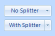
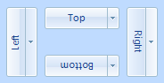
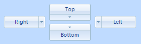
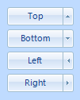
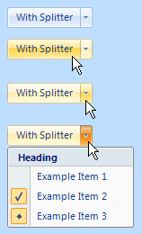

KryptonDropButton
This specialized button control is used to display a context menu when the button is pressed. An arrow symbol is shown inside the control as a visual indication of the drop down capability. If you choose to set the Splitter property then the button is split into two sections, a small area that contains the drop down arrow and the remained that acts like a standard button. Pressing the button causes the Click event to be generated and clicking the drop down portion of the control fires the DropDown event. The content of the control is contained in the Values property. You can define Text, ExtraText and Image details within the Values property.
Appearance
Use the Splitter property to define if the drop down button should be placed in its own separate area. Figure 1 shows the visual difference between the two possible settings. You can use the ButtonOrientation property to rotate the control. The default setting of Top shows the content in a left to right and top to bottom arrangement. Specify Bottom to have the control displayed upside down, Left to show the content rotated 90 degrees left and Right for 90 degrees rotated right. See figure 2 for examples. To alter the position of the drop down arrow use the DropDownPosition property as seen in figure 3. If you need to change the direction the arrow points, and therefore the location the context menu appears, then update DropDownPosition as shown in figure 4 below.
Update ButtonStyle to define the top level styling required for the appearance of the KryptonDropButton control. The default value of Standalone gives a solid appearance that should be appropriate for use in most circumstances. Alternatively you can use the LowProfile setting for situations where you need a transparent border and background. There are also custom styles that can be defined via a KryptonPalette for situations where you need to create variations on the styles already provided. Custom styles are named simply Custom1, Custom2 and Custom3.

Figure 1 – Splitter Property

Figure 2 – ButtonOrientation Property

Figure 3 – DropDownPosition Property

Figure 4 – DropDownOrientation Property
Four States
The button can be in one of four possible states, Disabled, Normal, Tracking and Pressed. If the control has been disabled because the Enabled property is defined as False then the button will be in the Disabled state.
When enabled the button will be in the Normal state until the user moves the mouse over the button at which point it enters the Tracking state. If the user presses the left mouse button whilst over the control then it enters the Pressed state. Note that if you have defined the drop down to be a Splitter then the two portions of the button can be in different states. For example, whilst the mouse is pressed over the drop arrow area that area will be shown in the Pressed state but the remainder will be drawn in the Tracking state.
In order to customize the appearance of the control in each of the four states you can use the properties StateDisabled, StateNormal, StateTracking and StatePressed. Each of these properties allows you to modify the background, border and content characteristics.
Common State
To speed up the customization process an extra StateCommon property has been provided. The settings from this are used if no override has been defined for the state specific entry. Note that the specific state values always take precedence and so if you define the border width in StateNormal and StateCommon then the StateNormal value will be used whenever the control is in the Normal state. Only if the StateNormal value is not overridden will it look in StateCommon.
Imagine the following scenario; you would like to define the border of the button to be 3 pixels wide with a rounding of 2 pixels and always red. Without the StateCommon property you would need to update the same three border settings in each of StateDisabled, StateNormal, StateTracking and StatePressed properties. Instead you can define the three border settings in just StateCommon and know they will be used whichever of the four appearance states the button happens to be using.
State Overrides
There are two additional properties called OverrideDefault and OverrideFocus that are involved in altering the appearance of the control. Notice that these start with the Override prefix instead of the usual State. This is because they do not relate to a specific control state such as Normal or Tracking. Instead they can be applied to any of the four possible states and are used to override the appearance that would otherwise be shown.
Focus Override
If the control currently has the focus then the OverrideFocus settings are applied. This can occur when the control is in Normal, Tracking or Pressed states. By default the override only alters the appearance so that a focus rectangle is drawn around the content so that the user can see that the control currently has the focus.
Default Button Override
Each Form has the concept of a default button that is clicked when the user presses the Enter key. The KryptonButton also supports the default button mechanism and OverrideDefault settings are applied to the appearance whenever the control has been designated as the default.
Examples of Appearance
Figure 5 shows the appearance of different states. The top example shows the drop button without any mouse interaction. The second and third images show the mouse tracking over the two areas of the control and the last image shows the context menu displayed when the drop arrow is pressed.

Figure 5 – DropDown Appearance